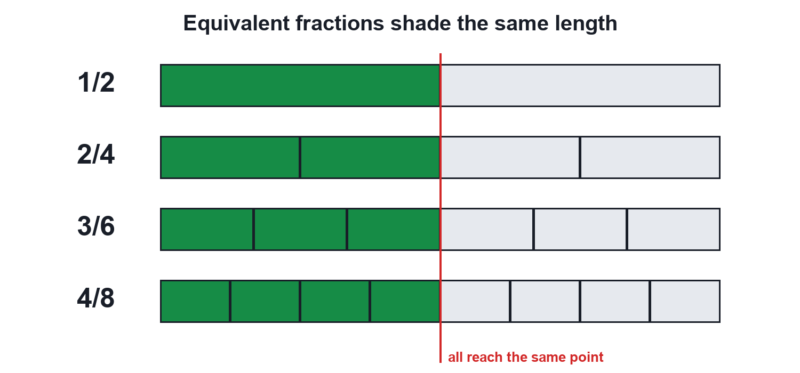
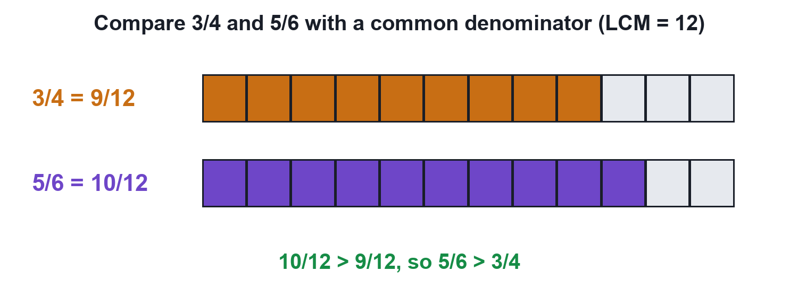
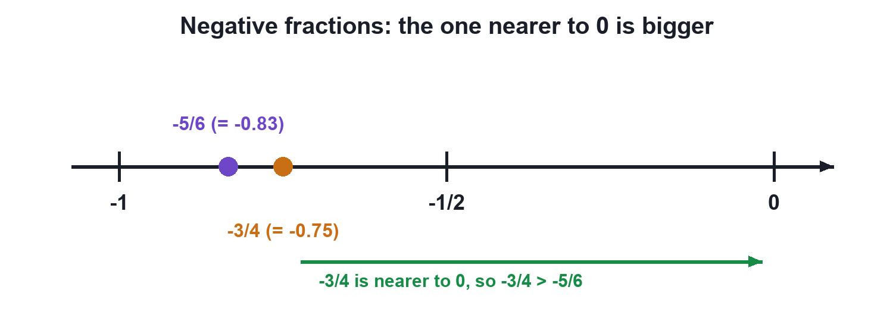

Equivalent Fractions and Comparing Rational Numbers
1 slice of 2 or 4 slices of 8: who ate more pizza? Learn equivalent fractions, the LCM trick for comparing, and why −3/4 > −5/6.
Video not playing? Watch it on Instagram · YouTube
04 – Equivalent Fractions and Comparison of Rational Numbers · PDF, 203 KB · solved examples, CBSE practice set and answer key
Key points
- Multiply or divide the numerator and denominator by the same non-zero number: the value does not change.
- To compare, make the denominators equal (use the LCM), then compare numerators.
- Cross-multiplication: for a/b and c/d (b, d > 0), compare a × d with b × c.
- For negatives the order flips: −3/4 > −5/6 (nearer to 0).
Same amount, different names
Rahul eats 1 of 2 slices; Priya eats 4 of 8 slices of the same pizza. They ate the same amount: 1/2 and 4/8 are equivalent fractions.
p/q = (p × m)/(q × m) for any non-zero m

Comparing two rational numbers
- Write both with a positive denominator.
- Find the LCM of the denominators.
- Rewrite both with the LCM as denominator.
- Compare the numerators.
3/4 vs 5/6: LCM(4, 6) = 12, so 3/4 = 9/12 and 5/6 = 10/12. Since 10 > 9, 5/6 > 3/4.

The negative twist
For negative numbers the order reverses. −3/4 = −0.75 sits to the right of −5/6 ≈ −0.83 on the number line, nearer to 0, so −3/4 > −5/6.

Try it yourself
Goal: Turn any two fractions into the same-sized pieces and see which is bigger, on bars and on a number line.
- Set the two fractions with the + and − buttons (numerators may be negative).
- Press 'Same pieces' to re-cut both bars into LCM pieces.
- Read the verdict and check where both fractions sit on the number line.
- Try −3/4 against −5/6 to see the order flip.
Quick quiz
5 questions. Choose an answer for each, then submit to see your score and the explanations.